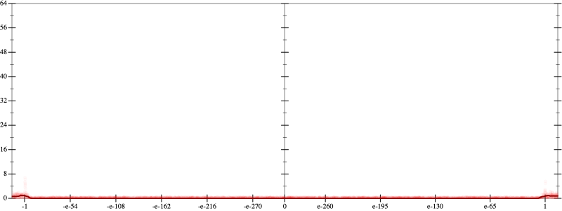
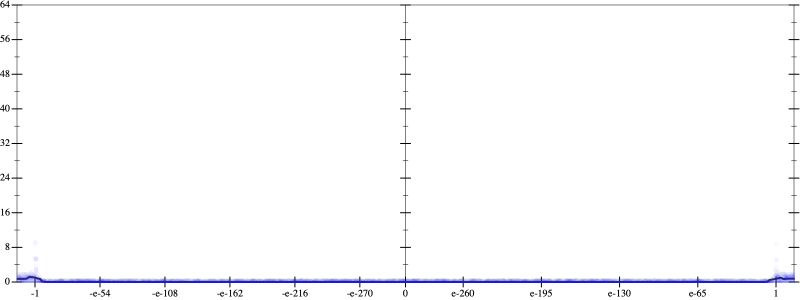
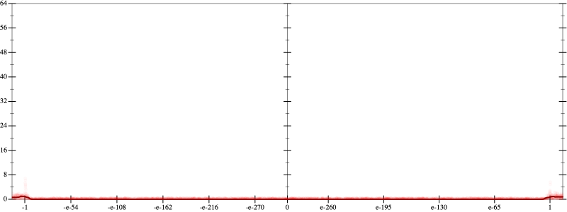
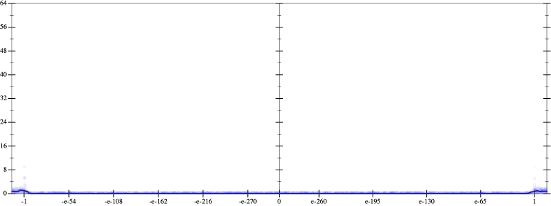

Initial program 0.0
\[\left(\left(\left(\left(-0.246094 + 13.535156 \cdot \left(x \cdot x\right)\right) + -117.304688 \cdot \left(\left(\left(x \cdot x\right) \cdot x\right) \cdot x\right)\right) + 351.914062 \cdot \left(\left(\left(\left(\left(x \cdot x\right) \cdot x\right) \cdot x\right) \cdot x\right) \cdot x\right)\right) + -427.324219 \cdot \left(\left(\left(\left(\left(\left(\left(x \cdot x\right) \cdot x\right) \cdot x\right) \cdot x\right) \cdot x\right) \cdot x\right) \cdot x\right)\right) + 180.425781 \cdot \left(\left(\left(\left(\left(\left(\left(\left(\left(x \cdot x\right) \cdot x\right) \cdot x\right) \cdot x\right) \cdot x\right) \cdot x\right) \cdot x\right) \cdot x\right) \cdot x\right)\]
Taylor expanded around inf 0.0
\[\leadsto \left(\left(\left(\left(-0.246094 + 13.535156 \cdot \left(x \cdot x\right)\right) + -117.304688 \cdot \left(\left(\left(x \cdot x\right) \cdot x\right) \cdot x\right)\right) + 351.914062 \cdot \left(\left(\left(\left(\left(x \cdot x\right) \cdot x\right) \cdot x\right) \cdot x\right) \cdot x\right)\right) + \color{blue}{-427.324219 \cdot {x}^{8}}\right) + 180.425781 \cdot \left(\left(\left(\left(\left(\left(\left(\left(\left(x \cdot x\right) \cdot x\right) \cdot x\right) \cdot x\right) \cdot x\right) \cdot x\right) \cdot x\right) \cdot x\right) \cdot x\right)\]
Applied simplify0.0
\[\leadsto \color{blue}{\left(\left(\left(x \cdot x\right) \cdot \left(x \cdot x\right)\right) \cdot \left(\left(351.914062 \cdot x\right) \cdot x\right) + \left(-427.324219 \cdot {x}^{8} + \left(x \cdot -117.304688\right) \cdot {x}^{3}\right)\right) + \left(\left(\left(180.425781 \cdot x\right) \cdot {x}^{3}\right) \cdot \left({x}^{3} \cdot {x}^{3}\right) + \left(\left(x \cdot x\right) \cdot 13.535156 + -0.246094\right)\right)}\]
 
